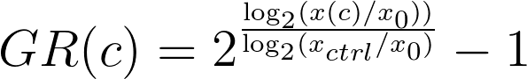
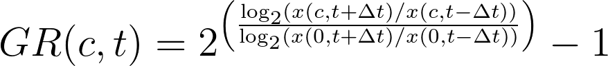
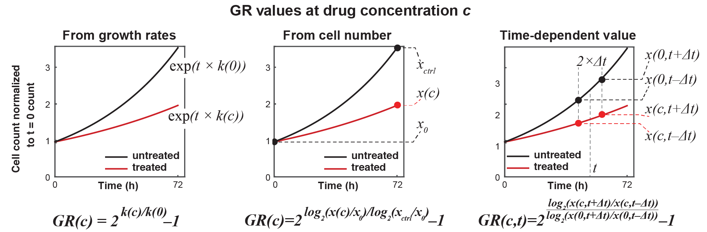
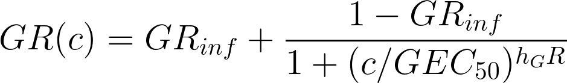
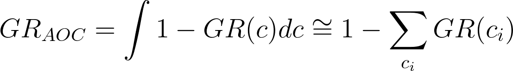
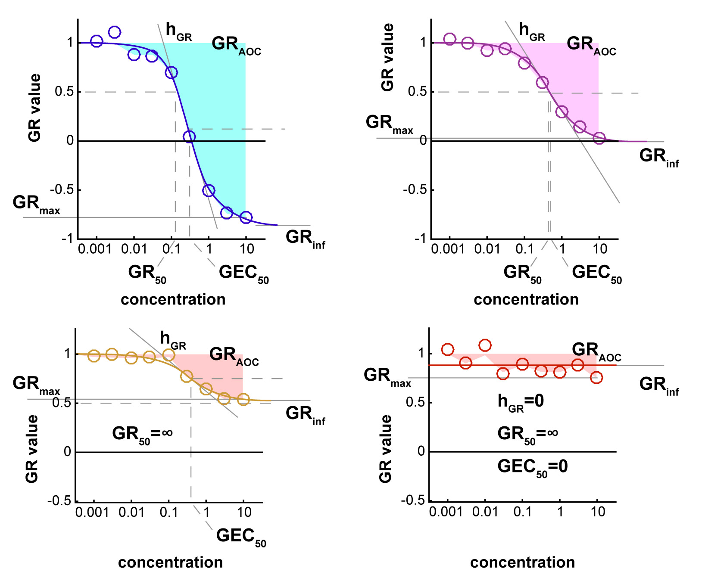

As an alternative to traditional metrics, we propose to use GR
metrics, which are based on inhibition of the growth rate over the
course of the assay and are independent of the division rate of the
assayed cell lines.
Growth can be estimated at different concentrations based on the
cell count at the time of treatment (x0),
the cell count in the untreated control (xctrl),
and the cell count after treatment at concentration c (x(c)):

This equation assumes exponential growth and constant
growth inhibition by the drug. Many phenomena such as drug efflux,
homeostasis and adaptation can result in non-exponential growth. In
such cases, time course assays and time-dependent GR values are better
suited to evaluating drug response. Given measurements of cell count
at different time points, time-dependent GR values are defined as:


Different methods can be used to
evaluate GR values: (left) Conceptual
approach based on growth rates (k0 and k(c));
(middle) fixed-interval approach based on cell number at the start
(x0) and end of the experiment (xctrl and
x(c)); and
(right) time-dependent approach based on cell count before and after a
time interval 2 × 𝚫t (x(c, t ± 𝚫t)).
GR(c) values (or
time-dependent GR(c,t) values
at a given time t) across
a range of concentrations are fitted to a sigmoidal curve:

where the fitted parameters are:
- GRinf:
the effect of the drug at infinite concentration (GRinf =
GR(c→∞)). GRinf lies
between –1 and 1. Negative values correspond to cytotoxic responses
(i.e., induction of cell death), and a value of 0 corresponds to a
fully cytostatic response.
- hGR:
the Hill coefficient of the fitted curve, which reflects how steep
the dose-response curve is. In practice, we typically constrain hGR to
a value between 0.1 and 5.
- GEC50:
the concentration at half-maximal effect. To avoid artefacts in
curve fitting we constrain GEC50 to
be within two orders of magnitude higher and lower than the
experimentally tested concentration range. (In practice, this is
usually about 10-7 to 103 μM.)If
the fit of the curve is not significantly better than that of a flat
curve (i.e., GR(c) ≡ GRinf)
based on an F-test with cutoff of p = 0.05, the response is
considered flat, and the parameter GEC50 is
set to 0.
If time-dependent GR(c,t) values
are used, GR metrics can be estimated at a different time points to
study how sensitivity evolves over time.
Inferred drug
response metrics
The GR50 value
is the concentration of drug at which GR(c
= GR50) =
0.5. If the value for GRinf is
above 0.5, the GR50 value
is not defined and is therefore set to +∞.
By extension, other thresholds can be defined in a similar manner. For
example, GR100 corresponds
to the concentration at which a drug is fully cytostatic: GR(c
= GR100) =
0.
GRmax is the
maximum effect of the drug at the highest tested concentration. It lies
between –1 and 1. A value of 0 corresponds to a fully cytostatic
response, and negative values correspond to a cytotoxic response. GRmax can
be estimated from the fitted curve or obtained directly from
experimental data. (We often do the later.)
For time course data, all metrics are evaluated at each time point
individually.
Area under the
curve and over the curve (GRAOC)
Another common metric for quantifying dose response is the area
under the response curve (AUC), which is based on integrating the
dose-response curve over the range of tested concentrations. In the case
of GR curves, which can have
negative values, it is more intuitive to use the area over the curve:

where GR(ci)
are measured GR values at discrete concentrations ci.
GRAOC has
the benefit that, in the case of no response, it has a value of 0. It is
important to note that GRAOC values
(like conventional AUC) can only be used to compare responses evaluated
across the same drug concentration range.
The GRAOC value
captures variation in potency and efficacy at the same time. The
calculation of GRAOC at
discrete (experimentally determined) concentrations has the advantage
that it does not require curve fitting and is therefore free of fitting
artifacts. This is especially useful for assays where fewer than five
concentrations are measured and curve fitting is unreliable. GRAOC values
are also more robust to experimental noise than metrics derived from
curve fitting; e.g. GRmax is
particularly sensitive to outlier values when directly obtained from
data.

Examples of dose-response curves and fits. The
upper panels depict strong responses to drugs for which all sensitivity
parameters can be defined. In contrast, in the case shown in the lower
left panel, GRinf is
above 0.5, so GR50 cannot
be defined (and thus is set to ∞). In the case shown in the lower right
panel, the response is weak and noisy, so the sigmoidal fit is not
significant, and a straight flat line is fitted. Nevertheless, only GRAUC and
GRinf can
HEAD be defined.